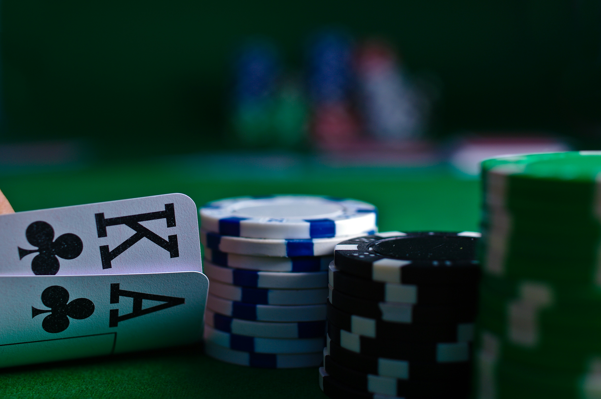

Poker ist eines der bekanntesten Kartenspiele der Welt und verbindet Glück, Strategie und Psychologie. Das Ziel des Spiels besteht darin, durch die beste Kartenkombination oder durch geschicktes Setzen von Einsätzen den Pot zu gewinnen. Der Pot ist die Summe aller Einsätze, die während einer Spielrunde gemacht werden.Die Ursprünge des Pokers reichen bis ins 19. Jahrhundert zurück. Das Spiel entwickelte sich aus verschiedenen europäischen Kartenspielen und verbreitete sich zunächst in den Vereinigten Staaten. Heute wird Poker sowohl in Casinos als auch online von Millionen Menschen gespielt.
Besonders beliebt ist Poker, weil nicht nur die Karten über Sieg oder Niederlage entscheiden. Erfolgreiche Spieler nutzen mathematische Berechnungen, beobachten ihre Gegner genau und treffen strategische Entscheidungen, um langfristig erfolgreich zu sein.
Wichtig:
Poker ist mit finanziellen Risiken verbunden, da echtes Geld eingesetzt wird und Verluste möglich sind. Obwohl Strategie eine wichtige Rolle spielt, bleibt der Glücksfaktor bestehen. Spieler können daher trotz guter Entscheidungen Geld verlieren.
Ein weiteres Risiko besteht darin, nach Verlusten höhere Einsätze zu tätigen, um das verlorene Geld zurückzugewinnen. Dies kann zu noch größeren Verlusten führen. Deshalb sind feste Einsatzlimits und verantwortungsvolles Spielen wichtig.
Poker sollte vor allem als Unterhaltung und nicht als sichere Einnahmequelle betrachtet werden.